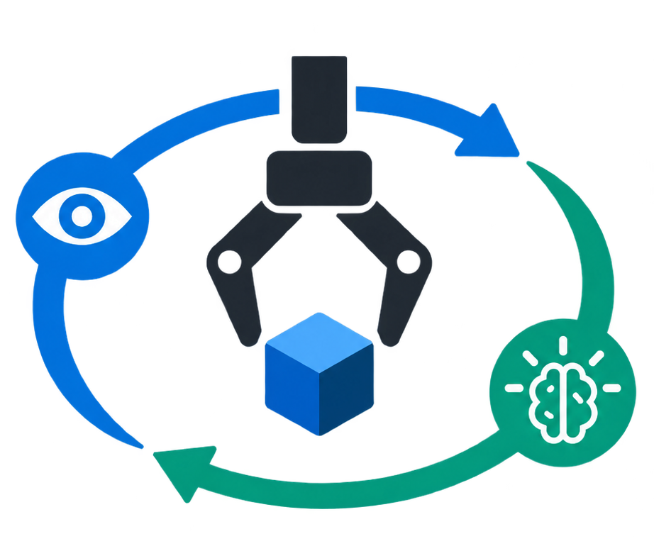
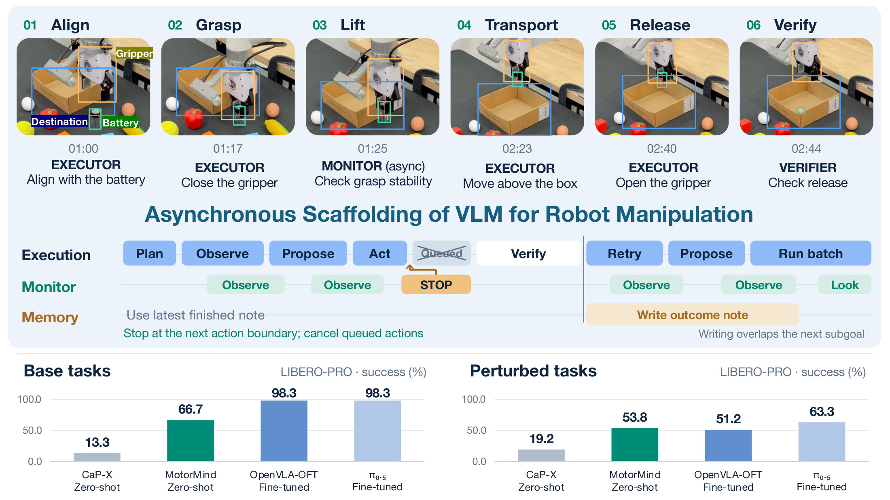
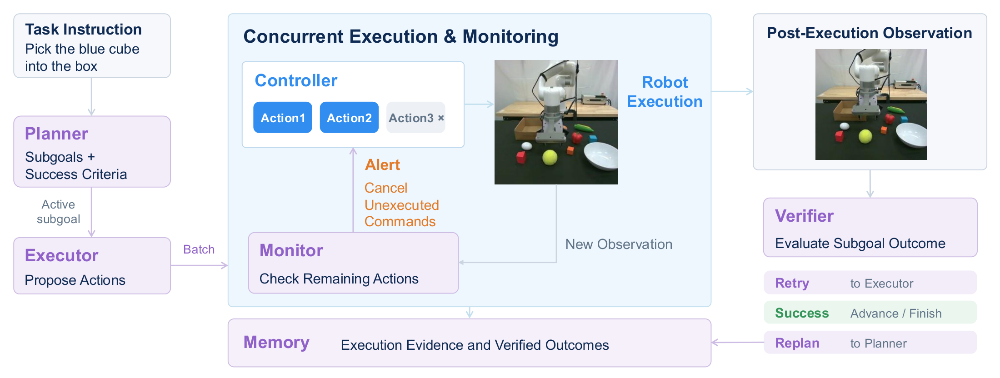
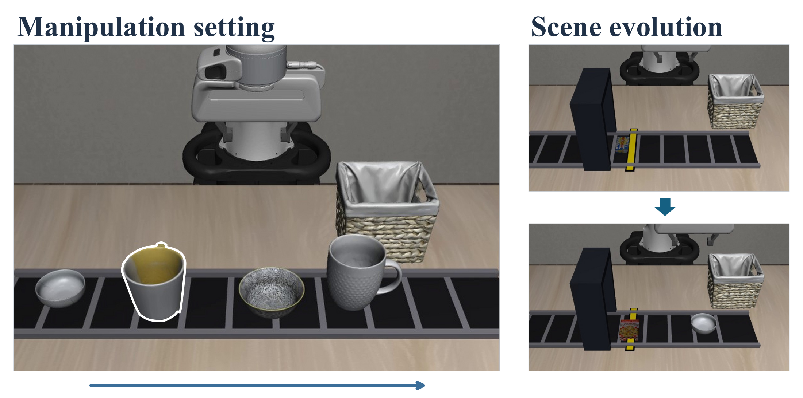
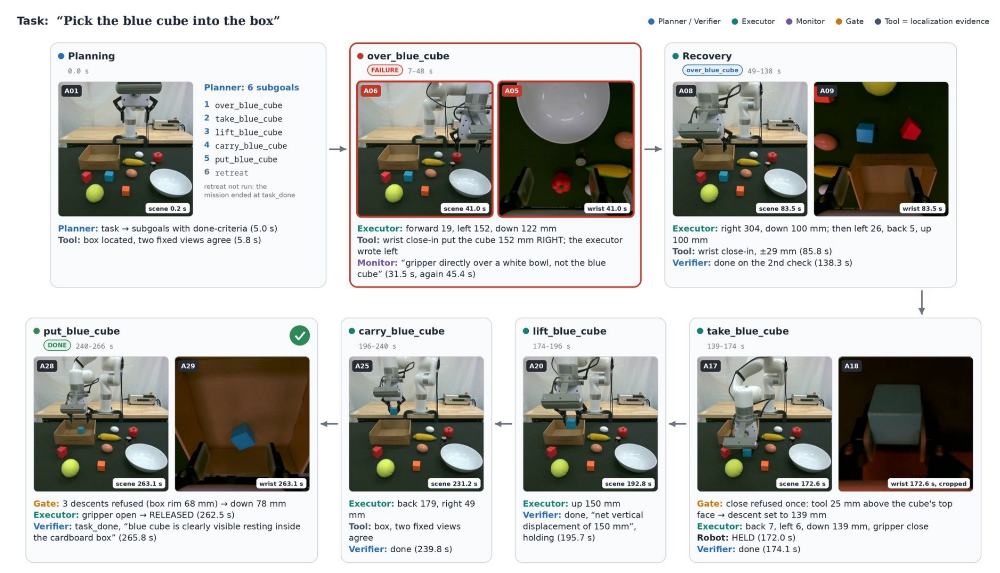

Action selection
What should the robot do next to advance the stated subgoal?

MotorMind.University of Illinois Urbana-Champaign
MotorMind bridges VLM reasoning and robot control through mid-level actions, continual refinement, and asynchronous verification, enabling strong zero-shot manipulation in both simulation (Franka in LIBERO-PRO) and on a real robot (xArm6), without task-specific training.
Vision-language-action (VLA) models have advanced robotic manipulation, but their zero-shot generalization remains limited, and their reliance on specialized robotics data keeps them from benefiting directly from rapidly advancing general-purpose vision-language models (VLMs). Agentic robotic systems instead use VLMs for high-level reasoning, yet typically depend on substantial external modules. This motivates our question: Can a general-purpose VLM itself serve as the decision-making core for robotic manipulation?
Evaluating VLMs on action selection, progress assessment, and task completion reveals a capability-control gap: VLMs reason well about manipulation, but their decisions do not match the abstraction of continuous, embodiment-specific control.
We introduce MotorMind, a VLM-centric manipulation harness with an asynchronous inference loop. Without task-specific policy training, MotorMind achieves 66.7% base success and 53.8% success under perturbations on LIBERO-PRO, compared with at most 13.3% and 19.2% for the prior zero-shot methods we evaluate, and the same interface reaches 95% average success on a real xArm6 robot across direct manipulation and human-perturbation settings.
A stronger VLM backbone further raises base success without changing the harness, and the remaining errors, mainly in visual grounding, embodied reasoning, and action knowledge, decrease with stronger VLMs. These results reframe zero-shot manipulation as aligning general-purpose model capabilities with the control representation, rather than solely learning specialized action policies.

Understanding VLM decisions
Can a general-purpose VLM make the decisions needed for manipulation? This diagnostic evaluation probes three capabilities with 240 visual questions, 80 per capability, drawn from robot observations.
What should the robot do next to advance the stated subgoal?
Did the observed transition make progress toward the subgoal?
Does the current state satisfy the subgoal and its success criterion?
Accuracy by decision type
Percent correct over 80 questions each. Action selection is the hardest task for every model.
Accuracy against latency
Overall accuracy on all 240 questions versus mean inference time per query (log scale).
| Model | Translation (48) | Rotation (19) | Gripper (13) |
|---|---|---|---|
| Qwen3.8-Flash-Next-FP8 | 47.92% (23/48) | 0.00% (0/19) | 46.15% (6/13) |
| HY-Embodied-0.5 MoT-2B | 20.83% (10/48) | 15.79% (3/19) | 23.08% (3/13) |
| Hy-Embodied-VLM-1.0 A3B | 31.25% (15/48) | 0.00% (0/19) | 0.00% (0/13) |
| Cosmos3-Nano (understanding tower) | 27.08% (13/48) | 0.00% (0/19) | 15.38% (2/13) |
| GLM-5.3-Flash | 41.67% (20/48) | 15.79% (3/19) | 53.85% (7/13) |
| GPT-6 Astra (medium) | 58.33% (28/48) | 63.16% (12/19) | 61.54% (8/13) |
These decisions motivate the MotorMind design: propose short action sequences, observe their effects, and reassess progress using robot feedback.
From reasoning to action
One frozen VLM takes five complementary roles: Planner, Executor, Monitor, Verifier, and Memory. A deterministic Controller turns its proposals into physical motion.

The VLM proposes parameterized moves, rotations, and gripper actions. The controller validates and executes them.
Fresh observations and measured feedback inform the next proposal. Outcomes determine whether to advance, retry, or replan.
The Monitor checks ongoing execution and can cancel pending commands at an action boundary. Memory updates run in the background.
Zero-shot manipulation
On LIBERO-PRO, MotorMind achieves the highest success among the evaluated zero-shot methods. Success rate and episode wall time are reported together.
Success against episode wall time
Every configuration in the full results table, for the selected split. The dashed curve is equal cost-efficiency to MotorMind.
| Method | Configuration | Base success rate (%) | Perturbation success rate (%) | Base efficiency | Perturbation efficiency | |||||||||
|---|---|---|---|---|---|---|---|---|---|---|---|---|---|---|
| Goal | Spatial | Object | Avg. | Semantic | Object | Position | Task | Avg. | Time (s) ↓ | Time score ↑ | Time (s) ↓ | Time score ↑ | ||
| Fine-Tuned Policies / Agentic Methods with Fine-Tuned Policies | ||||||||||||||
| π₀.₅ | Fine-tuned | 95.0 | 100.0 | 100.0 | 98.3 | 98.3 | 95.0 | 36.7 | 23.3 | 63.3 | 5.9 | 997.1 | 6.8 | 562.1 |
| MolmoAct2 | Fine-tuned | 100.0 | 100.0 | 100.0 | 100.0 | 95.0 | 90.0 | 36.7 | 30.0 | 62.9 | 6.6 | 914.6 | 7.7 | 492.2 |
| OpenVLA / OFT | Fine-tuned | 95.0 | 100.0 | 100.0 | 98.3 | 96.7 | 86.7 | 11.7 | 10.0 | 51.2 | 5.7 | 1033.5 | 6.7 | 459.9 |
| GR00T N1.5 | Fine-tuned | 0.0 | 95.0 | 0.0 | 31.7 | 30.0 | 30.0 | 1.7 | 16.7 | 19.6 | 15.6 | 121.8 | 16.2 | 72.4 |
| VoLoAgent (FT VLA as Tool) | Zero-shot agent | 55.0 | 90.0 | 100.0 | 81.7 | 88.3 | 83.3 | 45.0 | 25.0 | 60.4 | 106.2 | 46.1 | 216.9 | 16.7 |
| Harness VLA (FT VLA as Tool) | Zero-shot | 35.0 | 30.0 | 30.0 | 31.7 | 30.0 | 31.7 | 28.3 | 25.0 | 28.8 | 354.6 | 5.4 | 342.5 | 5.0 |
| Harness VLA (FT VLA as Tool) | Learnt on task · 5 loops | 55.0 | 50.0 | 55.0 | 53.3 | 65.0 | 51.7 | 50.0 | 50.0 | 54.2 | 1040.4 | 3.1 | 1286.2 | 2.5 |
| Harness VLA (FT VLA as Tool) | Learnt on task · 10 loops | 70.0 | 90.0 | 80.0 | 80.0 | 75.0 | 66.7 | 53.3 | 66.7 | 65.4 | 1764.0 | 2.7 | 2184.1 | 1.8 |
| Harness VLA (FT VLA as Tool) | Learnt on base · 5 loops | — | — | — | — | 55.0 | 48.3 | 43.3 | 41.7 | 47.1 | — | — | 1125.2 | 2.5 |
| Harness VLA (FT VLA as Tool) | Learnt on base · 10 loops | — | — | — | — | 70.0 | 58.3 | 41.7 | 45.0 | 53.8 | — | — | 1866.2 | 1.7 |
| Zero-Shot Methods | ||||||||||||||
| π₀.₅ | Zero-shot | 0.0 | 0.0 | 0.0 | 0.0 | 0.0 | 0.0 | 0.0 | 0.0 | 0.0 | 8.3 | 0.0 | 8.2 | 0.0 |
| MolmoAct2 | Zero-shot | 0.0 | 0.0 | 0.0 | 0.0 | 0.0 | 0.0 | 0.0 | 0.0 | 0.0 | 9.4 | 0.0 | 9.3 | 0.0 |
| OpenVLA / OFT | Zero-shot | 0.0 | 0.0 | 0.0 | 0.0 | 0.0 | 0.0 | 0.0 | 3.3 | 0.8 | 34.7 | 0.0 | 34.4 | 1.5 |
| GR00T N1.5 | Zero-shot | 0.0 | 0.0 | 0.0 | 0.0 | 0.0 | 0.0 | 0.0 | 0.0 | 0.0 | 6.3 | 0.0 | 6.2 | 0.0 |
| CaP-X (GPT5.6-Terra + Claude Opus 5) | Zero-shot | 5.0 | 0.0 | 5.0 | 3.3 | 15.0 | 3.3 | 1.7 | 3.3 | 5.8 | 68.5 | 2.9 | 72.4 | 4.8 |
| CaP-X (GPT5.6-Terra + Claude Opus 5) | 5 loops | 25.0 | 0.0 | 15.0 | 13.3 | 25.0 | 16.7 | 16.7 | 15.0 | 18.3 | 290.1 | 2.8 | 270.2 | 4.1 |
| CaP-X (GPT5.6-Terra + Claude Opus 5) | 10 loops | 25.0 | 0.0 | 15.0 | 13.3 | 26.7 | 16.7 | 16.7 | 16.7 | 19.2 | 346.4 | 2.3 | 320.4 | 3.6 |
| VoLoAgent (zero-shot VLA as Tool) | Zero-shot | 0.0 | 0.0 | 0.0 | 0.0 | 0.0 | 0.0 | 0.0 | 0.0 | 0.0 | 500.0 | 0.0 | 500.0 | 0.0 |
| MotorMind (Qwen3.8-Flash-Next) | Zero-shot | 45.0 | 75.0 | 80.0 | 66.7 | 58.3 | 46.7 | 51.7 | 58.3 | 53.8 | 223.4 | 17.91 | 248.5 | 12.99 |
Time score = 60 × success rate (%) / episode wall time (s), in percentage points per minute. Bold and underlined values mark the best and second-best results within each group. A dash denotes an unreported result.
Swapping in a stronger backbone
One seed per suite, LIBERO-PRO base. GPT-6 Sol with medium reasoning, same harness.
Average success rises from 66.7% to 83.3%, with the largest gains on Object and Goal (+20 points each). Every suite takes longer; Spatial goes from 199.0 s to 370.4 s.
When the world changes
Moving objects, shifted destinations, and revised instructions require decisions grounded in the latest observation.

Identify moving targets through semantic, relational, or temporal descriptions.
Continue toward the same goal after an object or destination moves.
Track and manipulate targets moving on a conveyor.
Respond to an updated instruction without resetting the scene.
From simulation to the real world
The same VLM-facing interface operates an xArm6 with RealSense D455 observations, without task-specific demonstrations or policy fine-tuning.
Success across direct manipulation
and human perturbations · 114 / 120 trials
When an approach heads toward the wrong region, the Monitor flags the mismatch. The Executor uses a new observation to re-localize the target and continue.

Semantic Understanding
Success over 5 trials per task.
Replays
58 LIBERO-PRO episodes from the evaluated run, with the model's own words synced to the cameras: two successful episodes for every task that succeeded at all, two recoveries, and four failure examples. Each frame is one observation. Click any log line to jump there, or click the subgoal strip. Orange marks on the strip are the subgoals where the failure analysis found an error.
Reasoning log
Failure analysis
We labeled every failure in the 300 LIBERO-PRO episodes behind the MotorMind rows of the main table, using the simulator ground truth the evaluation logged at every observation: each object's pose, the finger gap and each goal predicate. None of it reaches a model. Failures are labeled along two axes.
Physical failures describe what happened in the scene: an empty grasp, a wrong object lifted, the target dropped, knocked over, or misplaced off its goal. A failure is recovered if the target is carried again afterwards; a failed episode with no unrecovered physical failure is stuck.
VLM decision errors are model judgments that the simulator state contradicts: in grounding, planning, progress checks, task completion, or failure monitoring. Only model-made verdicts are scored; verdicts the harness settles in code are excluded.
Perturbation lowers the share of failure-free episodes from 57% to 44%. Recovery depends on the failure type, and false done occurs only under perturbation (21 of 240 episodes).
Recovery by physical failure type
Failure events across all 300 episodes (an episode can have several), and the share after which the target was carried again.
63 of the 131 failed episodes (48%) never get hold of the target: 31 are stuck without lifting it, 27 of them without ever closing the jaws, and 32 end after empty grasps.
In 42 of those 63 the target is a bowl or a plate, which offers only a thin rim to grasp or has to be pushed. Tasks with such targets succeed 47% of the time (67/144), against 70% (95/136) for other objects.
Of the 54 stuck episodes, 31 never lift the target, 16 run out of budget while holding it or after carrying it, and 7 never achieve an articulation goal such as opening a drawer.
Grounding and completion errors account for 197 of the 209 decision errors. Grounding errors triple under semantic paraphrase (12 to 39 per 60 episodes) and stay high under object and position perturbations. Completion errors rise from 1 on unperturbed tasks to 27 under task perturbation.
VLM decision errors per 60 episodes
Raw counts by perturbation. Malformed replies are counted separately.
A grounding error is counted when the model localizes a target point near an unrelated object and far from the true target during an approach or grasp. 23 of the 25 wrong-object lifts follow a grounding error in the same or an earlier subgoal. Episodes with a grounding error succeed 31% of the time (14/45), against 61% (155/255) without one.
Across 300 episodes there are only 12 step-level errors: 4 progress checks, 5 missed failures and 3 planning errors. The Planner phrases step criteria in measured quantities, such as whether the gripper reports holding and how far the tool rose, so the Verifier checks readings instead of inferring progress from pixels. Task completion has no such reading and remains a visual judgment.
All 71 “task done” claims were wrong
Episodes stop as soon as the goal predicate holds, so every claim was made while it was false. We checked all 71 against the recorded state.
What the scene looked like at the claim
What the harness did with it